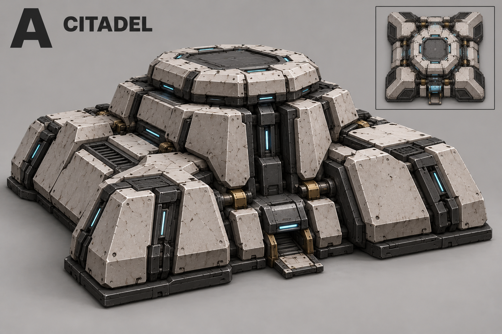
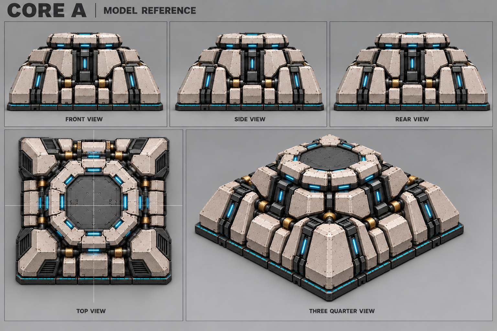
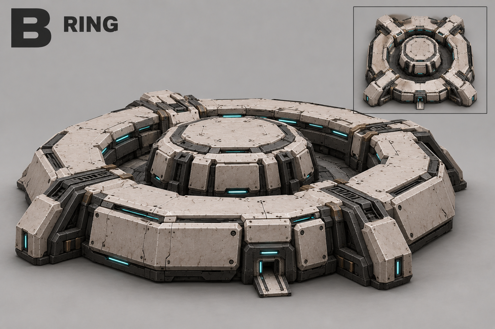
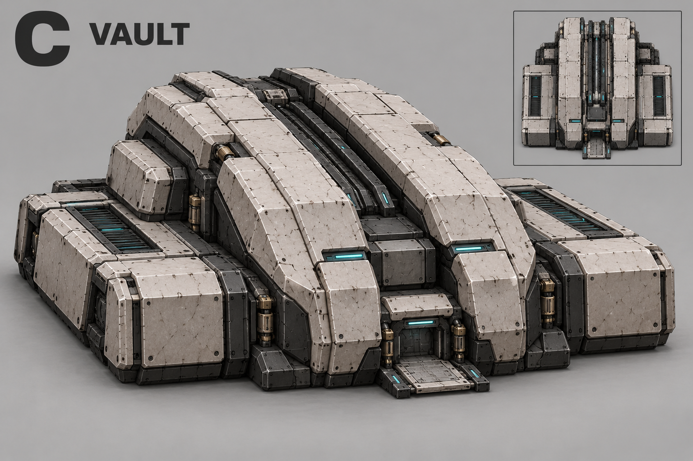
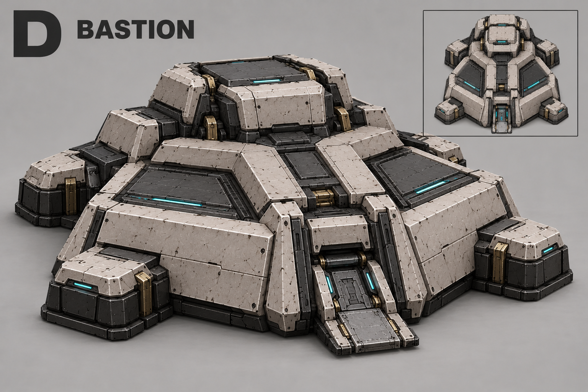
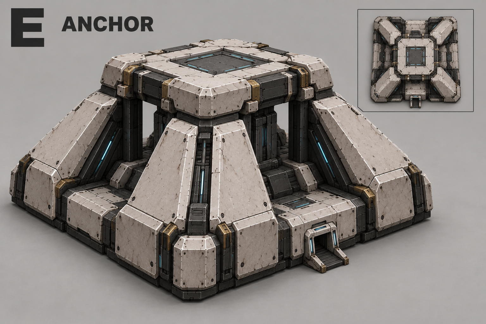
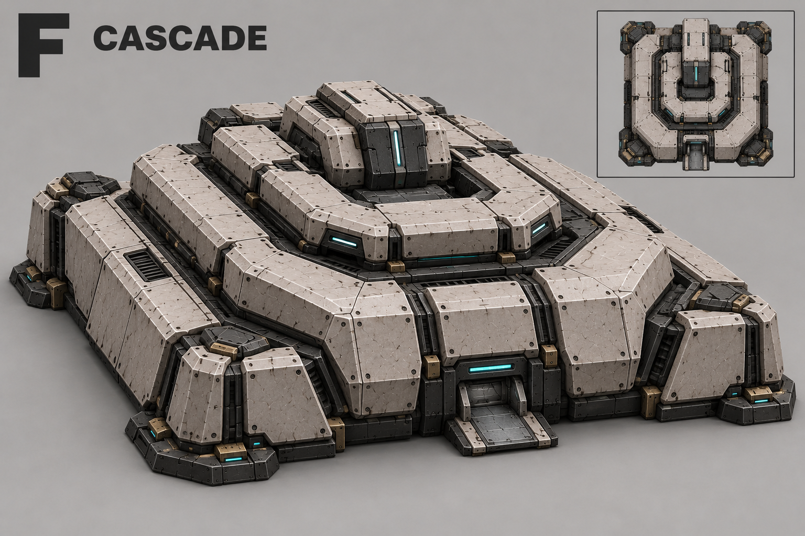

A — Цитадель
Ступенчатая центральная башня на широком основании.

Производство Нодов, 20 лимита, сеть радиуса 10, квота трёх сборочных на готовое Ядро. Строится вне сети. Выбран A — «Цитадель». Здания не вращаются. Юниты собираются снаружи из вытекающей нанитной массы.
Шесть архитектурных направлений. Виды сверху — эскизы силуэта; точную геометрию проверяем после выбора.
Все концепты · Описание · Промпты
Основной референс. Фиксированного выхода нет. Лист 10 принят автором, включая исправленный ракурс 3/4: квадратное основание, центрированная башня и симметричная диагональная камера. Остальные виды — основа геометрии; детали 3/4 сверить при блокинге.

Ворота и пандусы на старых листах больше не актуальны.
Ступенчатая центральная башня на широком основании.

Массивное замкнутое кольцо вокруг невысокого центра.

Сводчатый корпус из двух крупных сходящихся оболочек.

Низкая крепостная форма с поднятой задней частью.

Центральный блок под крышкой на четырёх архитектурных опорах.

Широкий корпус с вложенными ступенчатыми террасами.
